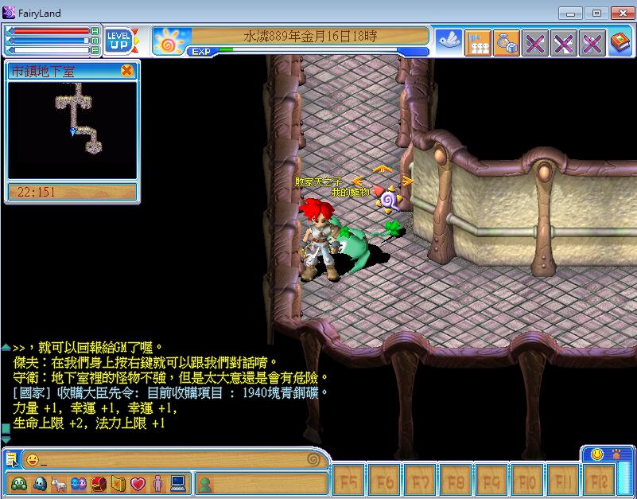

2022/08/11：
感謝草帽小子提供樂器 105,125 相關頭銜名稱圖片
( 童話攻略 - 特殊物品 - 工作技能頭銜收集區 )
2021/08/01：
今天下午三點的活動無法參與到 因為要帶小朋友出去
所以晚上八點我會盡量在線!!!
2021/07/26：
補充 20210801 活動介紹圖片
圖片請點我
2021/07/25：
感謝網友邀請 2021/08/01 我應該下午會上線~
目前我都在
Youtube 阿天頻道
歡迎點擊訂閱
另外初玩童話的時候 我還只是個大學生
現在我跟敗家伶伶(其實我們是班對) 也結婚兩個小孩了(目前四歲跟六歲)
平日的生活就是玩玩手遊 工作(一樣做網站) 然後錄錄 Youtube 影片這樣
因此時間比較片段 無法長時間顧在電腦前
不過還是感謝網友還記得這個網站並邀請我
附上圖片 如果有人看到的話請盡量參與活動喔
圖片請點我
2019/08/19：
感謝網友提供 105 , 125 相關頭銜名稱圖片及取得地點
( 童話攻略 - 特殊物品 - 工作技能頭銜收集區 )
2019/03/29：
幻獸百科也有換頁沒反應的問題，已修復
沒反應請開此連結多按幾次重整(F5)更新
( 幻獸大全 - 幻獸百科 )
2019/03/27：
站長在遊戲中創的角色叫「敗家天之子」，目前好像沒聽說敗家一族的老玩家有回鍋創家族 XD，需要聯絡我還是以 Email 為主，我會努力練的 ...

2019/03/24：
有新資訊歡迎提供 dspswen@gmail.com
站長一樣有空會更新網站喔~~~~(如果左邊連結沒看到2019重製版的選項，請清一下網站緩存，或關掉瀏覽器重進網站或多按F5重整畫面)
另外原本左側上方有個遊戲製作人噗浪，現在改成微博，比較可以看到大大的一些新資訊
更新修復
幻獸圖鑑
下方無法選擇(請進此頁多按幾次F5刷新)
修復幻獸資料庫資料片的幻獸圖片會有破圖
幻獸資料庫補上 "火星、奶油蛋糕、金星人、菠蘿甜甜圈、黑暗鳳凰、黑盞菊、暗龜、糖霜薑餅人" 等圖片
但是部份幻獸地圖不確定，是融合還是變身藥水的再請玩家補充
( 2019重製版 - 2019新官網 )
( 2019重製版 - 公測版寶箱資訊 )
2019/03/20：
http://nfl.lager.com.tw
各位童話的玩家，上啊~~~~
2019/01/06：
網站搬新家 : http://dsps.case.eorz.net
請大家告訴大家，因為舊主機實在是很多問題(也不便宜)
有無法使用的請再通知站長 : dspswen@gmail.com 感謝
2018/08/09：
真的 ... 隔了好幾年後站長親自更新這邊
FB童話社團
我想大家也應該聽說過童話要終止運營(如果還有在看敗家網應該就有認真在追消息了)
不過好消息是站長透過老~~~官方(都過十幾年也都離開了)聽說到童話會有新的復刻版， 因為終止主因是系統無法再維修(win10)，不論如何還有在看這個網站的朋友，我想應該不是小玩家了，都應該踏入社會了。目前遊戲業的經營狀況其實很辛苦， 台灣能像雷爵這樣自製研發並佛心還繼續開放童話免費玩的公司已經不多，大部份都是捧著鈔票給大陸或是海外直接代理遊戲，誰還會養研發遊戲的人員 ? 因此站長沒有收雷爵半點好處，但還是在這邊希望大家期待童話復刻版出生， 以及期待雷爵日後的發展。
最後若我有最新消息會貼在這邊，另外童話若真的復活，請大家支持雷爵公司，不要購買來路不明外掛，要付錢請讓雷爵賺，真正進入社會就知道，我們小員工要薪水，做老闆的也要發薪水，一間遊戲公司沒有意義要維護一款完全不賺錢的遊戲， 遊戲不賺錢最後就是收起來，連伺服器網路費都省下來，因此如果真的童話未來有任何收費(先聲明我完全不知道)，若能支持請支持雷爵官方的儲值，這樣才是我們玩家真的認同遊戲認同雷爵的方式。
謝謝各位。
2013/05/11：
最近好多活動阿，媽媽我愛泥！
更新葡萄酒習得法術，謝謝好朋友的提醒。 如果大家有發現錯誤的地方，請提供給小幫手更正喔~或是飛鴿給金蘋果＂$生菇饅頭＂甘溫喔。
2012/10/22：
遇見回鍋的朋友真好！
最近遇到好多回鍋的朋友啊，走在路上都能遇到！開心之餘今日來小小更新一下烹飪、調配、釀酒140級~160級的經驗數值， 但是有些小幫手自己沒做的技能就無法補上，如果大家有發現錯誤的地方，請提供給小幫手更正喔~或是飛鴿給金蘋果”$生菇饅頭”。
2012/08/14：
敗家小幫手來嘍！
小幫手因為最近回鍋，希望來幫幫站長拔草一下XD，請各位朋友多多指教~ 今日更新
幻獸降級數值公式
，位置：資源分享 / 檔案下載 / 其他檔案下載 / 幻獸降級數值公式有任何更新請通知站長
dspswen@gmail.com
及小幫手
alfiewu383@gmail.com
！
2010/03/09：
敗家彩虹汽泡申請帳號頁 - 領號碼囉
請之前有到敗家申請的人，來此頁面輸入你當時輸入的姓名查詢啟動碼，若當時姓名輸入太複或輸入其他文字，導致無法讀到資料，請Mail給站長詢問:dspswen@gmail.com
2010/03/04：
敗家彩虹汽泡申請帳號頁
這是只有敗家才專有的申請帳號地方喔∼不要這麼大聲讓別人知道，我們不用取跟人家搶申請啦！老玩家優先∼∼∼∼
2010/01/09：
敗家彩虹汽泡Facebook粉絲頁
點我點我
暫時會將有關彩虹汽泡的更新資料都丟到這粉絲頁喔，新網站還在規劃中∼所以請大家多認識Facebook，去加入這個粉絲頁喔！
2009/11/26：
左邊連結增加
傳說中的童話2？喔不~應該是彩虹汽泡，至於為什麼不叫童話2呢？我也不知道（毆）∼
不過我猜是官方不想背著童話這個包袱，或者說希望大家看到一個嶄新的遊戲而不是一直在追尋童話1的影子， 但看官方BLOG還是覺得我們這麼久的期待是值得的，那些圖片看起來感覺這遊戲一定很有趣！
2009/04/17：
2009/11/26：
哇！！原來是站長信箱沒更新！！
左邊聯絡站長的信箱是舊的，現在已經改成
dspswen@gmail.com
哎呀呀∼果然這網站真的太久了 ... 難怪我覺得一直很和平呢 ... （裝傻），現在就是繼續期待童話2囉，繼續學習做網站！
2009/04/17：
令人不捨的消息
妡月c_牛牛___後輪打滑 差點跑去種田 說 (昨天 下午 11:37):
敬告...與慕晨(童話敗家一族-晨依.星雨心月)有關的朋友們,不論你在什麼時後認識,但我由衷的感謝你們,
慕晨於2009.4.16日因肝癌辭世....
-----------------------------------
站長：童話失去一位好玩家，祝她能在天上過得如童話般幸福的日子 R.I.P.
2009/04/03：
童話 4/25 要辦網聚囉！！！
請看官網
，最近注意一下官網的消息囉，應該是台北 4/25。
2009/02/15：
新童話論壇
因為不熟悉 ... 所以論壇又重灌了 orz ... 之前資料也比較少。
但這次更新是為了童話2 ... 不過請大家不要激動，不是童話2要出了，而只是因為之前看到一篇新聞，所以想 把一些資料先放著，加上站長也沒在玩童話1了，敗家很多資料沒更新(我也不知道有哪些)，所以現在想漸漸整理一些新的功能， 算是為了童話2準備吧 @@ ...
可是請不要問站長童話2消息，我跟大家一樣，完全不了解 ... 但是我很期待就是了 ~
( 七嘴八舌 - 童話論壇 )
2008/12/08：
留言板跟幻獸資料庫修復...一半 = =
不好意思另一個空間租約到期 ... 經濟有點不好所以沒有續繳了，因此有些資料救不回來了，臨時就砍掉了，如果有任何問題請寄信給站長，謝謝。
Msn & Email：dspswen@hotmail.com
2008/12/07：
網站空間出現問題
有些功能可能無法使用，請大家耐心等候修復，實在不好意思，站長也很急 ><
2008/11/06：
敗家新增一個有趣的小功能(活動)
這個利用 Google Map 做的小東西，大家有空可以玩一下 ^^
( 活動報報 - 童話Map )
2008/09/03：
敗家特別企劃網聚活動通知(時間確定9/27下午)
請要去的玩家(如果你是特別企劃達成的人請特別說明)，利用 MSN 或是 E-mail 聯絡站長，站長要統計一下人數，感謝各位，之前有跟站長說的請再說一次，非常感謝大家配合。
2008/09/02：
敗家特別企劃網聚活動(時間確定9/27下午)
9/27下午-9/27下午-9/27下午-9/27下午-9/27下午-9/27下午-9/27下午
時間確定是9/27下午，地點就暫約台北車站吧（有能提供場地的網友是更好），官方會不會出席還不一定，不過站長是一定會到。
希望請達成目標的玩家，將自己的留言是哪一篇（現在留的都不在這次活動時間內）記一下，然後把達成目標的證明帶去，譬如學生證、成績單（最好是影印本），因為這樣 站長可以帶去給官方，或者請官方做個官網特別活動，也算是給童話一個宣傳。至於獎品，站長會盡量幫各位徵取大家想要的 : )
所以請記住這個時間，如有任何問題可以 MSN 給站長（下面那篇有MSN），如果沒辦法到來的，可以利用傳真的（到時我再看看要傳到哪裡），不過還是請先跟站長 MSN 聯絡一下。
詳細地點尚未定，不過 9/27 下午是確定的，因此暫定台北車站，站長也會注意一下有沒有好的場地。
另外
沒參加特別企劃的
當然也可以來，不過官方有可能不會來，因此這個活動只是個單純的聚會，不是什麼要提供意見給官方的那種聚會 @@ ... 不過因為活動主要是鼓勵邊玩童話又能邊顧課業的玩家， 因此如果你覺得你有什麼特別的，也可以跟站長提，但是還是有參加特別企劃的人最大，不然就不公平囉。
2008/08/26：
特別企劃開始截止(倒數開始)
站長已經收到一些達成目標玩家的來信，也都有保留起來，希望你們都有把站長的 MSN 加進去以便聯絡。
站長 MSN：
dspswen@hotmail.com
最終截止日期是
9/7
過了之後就算第二階段的目標開始，不過之後好像也沒什麼大考試之類的， 這個就要看第一次活動如何了，然後站長在特別企劃也有寫到，並非達成就一定有獎，因為官方才是大王，站長只是發個聲，希望能給玩童話又能兼顧課業的好玩家一點鼓勵， 但目前看起來官方是很願意配合的，所以會在 9/7 的下個星期
9/13(六) 或 9/14(日)
辦一個小小的網聚，確認大家是否達成目標(請帶成績單或是學生證之類的)， 活動地點是在台北(不好意思，外縣市辛苦了，或是將資料掃瞄寄給我比較好，因為這算敗家私人活動並非官方活動，因此選擇官方也在的台北)。
這只是一個簡單地網聚(或聚餐)，到時會請官方人員來見證，先提醒達成目標並有回報給站長的玩家，在 9/13 or 9/14 應該會有小聚會。
2008/08/15：
特別企劃開始截止(第一階段??)
目前已經收到一些網友達成目標的來信，不過因為要確認是否真得達成目標，以及要詢問官方是否同意發獎，因此需要一些時間， 請達成目標的玩家
詳細地將自己的所在伺服器、在遊戲中的角色名稱、自己在特別企劃設的目標是什麼(不說站長還要回去找= =)
，這樣方便作業時間 謝謝各位 :)
請將資料寄到 dspswen@hotmail.com或是直接加站長 MSN(同左邊的E-mail)
預計等待收件時間是一個月，要是晚寄給站長的話，那可能發獎時間又會不知道要延到什麼時候了，畢竟官方很忙，站長要跟官方邀獎就已經有些困難了， 不過官方還是很樂意鼓勵玩遊戲又不忘用功的玩家們，這點還是讓站長很感動 T_T
2008/07/25：
哇！星光幫安伯政在童話出沒！
安伯政∼∼∼我愛你∼∼∼∼安伯政∼∼∼我愛你∼∼∼∼安伯政∼∼∼我愛你∼∼∼∼
安伯政∼∼∼我愛你∼∼∼∼安伯政∼∼∼我愛你∼∼∼∼安伯政∼∼∼我愛你∼∼∼∼
安伯政∼∼∼我愛你∼∼∼∼安伯政∼∼∼我愛你∼∼∼∼安伯政∼∼∼我愛你∼∼∼∼
安伯政∼∼∼我愛你∼∼∼∼安伯政∼∼∼我愛你∼∼∼∼安伯政∼∼∼我愛你∼∼∼∼
安伯政∼∼∼我愛你∼∼∼∼安伯政∼∼∼我愛你∼∼∼∼安伯政∼∼∼我愛你∼∼∼∼
安伯政∼∼∼我愛你∼∼∼∼安伯政∼∼∼我愛你∼∼∼∼安伯政∼∼∼我愛你∼∼∼∼
安伯政∼∼∼我愛你∼∼∼∼安伯政∼∼∼我愛你∼∼∼∼安伯政∼∼∼我愛你∼∼∼∼
安伯政∼∼∼我愛你∼∼∼∼安伯政∼∼∼我愛你∼∼∼∼安伯政∼∼∼我愛你∼∼∼∼
安伯政∼∼∼我愛你∼∼∼∼安伯政∼∼∼我愛你∼∼∼∼安伯政∼∼∼我愛你∼∼∼∼
安伯政∼∼∼我愛你∼∼∼∼安伯政∼∼∼我愛你∼∼∼∼安伯政∼∼∼我愛你∼∼∼∼
安伯政∼∼∼我愛你∼∼∼∼安伯政∼∼∼我愛你∼∼∼∼安伯政∼∼∼我愛你∼∼∼∼
安伯政∼∼∼我愛你∼∼∼∼安伯政∼∼∼我愛你∼∼∼∼安伯政∼∼∼我愛你∼∼∼∼
安伯政∼∼∼我愛你∼∼∼∼（咦？網站又被駭了？）
童話線上代言就是你啦！！唱幾首歌給童話的玩家聽吧∼∼∼ :D
2008/07/01：
任務攻略修正
感謝網友在留言板提醒，是因為網站太舊了，用的是舊 IE 語法 ... FireFox 不支援，現在已經修正囉 ^^
( 童話攻略 -> 任務攻略 )
2008/04/29：
有問題請上童話論壇
又很久沒更新 = = ... 雖然好像有很多童話的東西，不過請原諒站長最近又在偷懶 ... 有問題請多上童話論壇發問喔！在留言板可能會被洗掉，也希望能夠衝起童話論壇的人氣（想新增什麼版當版主也可以寫信給我）
( 七嘴八舌 -> 童話論壇 )
童話官方網站
國際版官網
註冊 & 繳費
常見問題解答
搶鮮版動畫 - 8MB
客服信箱
糖果屋
桃太郎
美女與野獸
姆指姑娘
綠野仙蹤
國王的新衣
一千零一夜
愛麗絲夢遊仙境
人魚傳說
請輸入要訂閱的電子郵件信箱
請輸入要取消的電子郵件信箱
香港官方網站
馬來西亞官方網站
日本官方網站
大陸官方網站
泰國官方網站